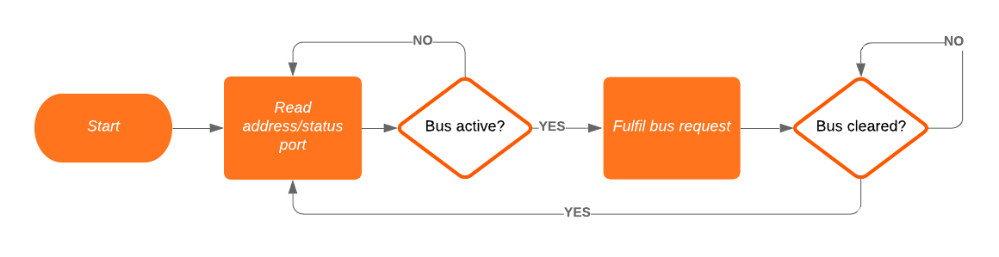

The TRS-20 - fake it 'til you make it

My processor appears to be happy in its perfboard home for now. While I can get pretty excited over seeing signal probes confirm data sheet timing diagrams, I’ll admit that it’s a limited success. There is still a long road to having a homebrew computer built. What I’d like to do next is give the processor some RAM and ROM, and have it execute programs more significant than endless NOPs. I’d like to exercise the other major machine cycles - memory write, and I/O reads and writes, so I can get excited about signal probes confirming a whole new swathe of timing diagrams.
To achieve this, I’ll use my STM32F401CC “black pill” board to act as the RAM and ROM, and use its connection to my LCD to display runtime status information. With 256KiB of Flash and 64KiB of SRAM, there’s space on the black pill to share with the Z180… but can the 84MHz STM32F401CC react fast enough to deliver data smoothly to the 1MHz Z180?
Note: this post contains a significant mistake that flows on to the next post. I’ve annotated the mistake in a subsequent edit, but have otherwise left it as-is.
Will they blend?
At a physical level, there’s no particular problem with wiring up the STM32 to the Z180. The STM32 is 5V tolerant, so as long as voltage levels, current limits, and impedance requirements line up, I can wire the two up directly.
\[\begin{array}{rrcll} & \text{STM32} & & \text{Z180} & \\\hline V_{IL} &1V &\leq& 0.45V &V_{OL} \\ V_{IH} &2.3V &\leq& 2.4V &V_{OH} \\ V_{OL} &0.4V &\geq & 0.8V &V_{IL} \\ V_{OH} &2.4V &\geq & 2.0V &V_{IH} \\ \end{array} \]
There’s a possible concern with the VIH for the STM32 at 2.31V, and the VOH of the Z180 at 2.4V. 100mV is not a lot of margin. The datasheet indicates that the Z180 will put out a voltage of VCC-1.2 if the output current is 20μA or less. The dynamic current consumption of the STM32 is calculated below, based on a pin capacitance on the Z180 of up to 12pF plus some stray capacitance.
\[\begin{aligned} I_{SW} &= C_L \times V_{DD} \times F_{SW} \\ &= 20\mathrm{pF} \times 3.3\mathrm{V} \times 1\mathrm{MHz} \\ &= 20\times10^{-12} \times 3.3 \times 1\times10^6 \\ &= 20\times10^{-6} \times 3.3 \\ &= 60\times10^{-6} \\ &= 60\textrm{μA} \end{aligned}\]
60μA means the high output voltage will be somewhere between 2.4V and 3.8V. There’s no curve provided, alas, but having a lower current than 200μA means the high level will be over 2.4V, and the circuit should behave correctly.

{kind=link}
There’s also the matter of pin assignments. The black pill board has an STM32F401CCU6 processor on it, which is a 48-pin device. Ten pins are supply pins, two pins are boot/reset signals, and the remaining 36 pins are GPIO - or special purpose. PC14 and PC15 are attached to the external low-speed oscillator, as shown above. According to the full schematic, PC13 is wired to the board’s user LED. PA11 and PA12 are wired to the USB-C socket. PA4 (F_CS), PA5, PA6 (MISO), and PA7 (MOSI) are all wired up to U3, which by the schematic is a 32M SPI Flash chip - this Flash has not been installed on my board, so these pins are available for GPIO. PA13 and PA14 are wired to the serial debug header, and are SWDIO and SWCLK respectively. PB3, PB4, and PA15 are also JTAG pins, but there’s no JTAG header exposed, so I can configure these pins for GPIO. However, PB4 and PA15 are in pull-up state after reset, so care must be taken if they’re wired directly to the Z180.
I2C3 uses PA8 and PB4. PB2 is tied to ground, as it also serves as BOOT1 and must be low when BOOT0 is high to select the bootloader. This leaves PB0:1 and PB5:10 free for the address bus, and PB12:15 for signals. Pulling in MREQ, IORQ, RD, and WR gives me 95% of what I’ll need - I can’t detect an interrupt acknowledge, differentiate opcode fetch from other memory reads, or see a bus request acknowledgement. PA0:7 are open to be the data bus, so long as I can switch them from output to input fast enough to avoid a bus collision with the Z180. I’m left with PA8:10 for any further signals required.
Note: here is my mistake: the address bus on the Z180 is not 8-bit, it’s 20-bit. I never intended to use the full 20 bits, but I did intend to use 16 bits. I’ve only assigned 8 pins for the address bus, which gives me 128 bytes each of RAM and ROM. This isn’t a disaster, since I need to wean myself off the μC anyway, but it is a pretty big error in planning! I’m proceeding with an 8-bit address bus, and if I get desperate PA8:10 can give me 8x the address space.
Racing electrons
The STM32F4 can be configured to operate at 84 times the system clock speed of the Z180. At this speed, there’s a good chance that the STM32 will have enough time to observe signal changes and connect SRAM or Flash to the data bus depending on the operation involved. And, of course, if there’s any bug in my code then I’ll either lock the data bus on output and possibly burn out pins, or lock it on input and the Z180 will see only noise. A transceiver with its enable and direction inputs controlled by glue logic may be worthwhile to protect my hardware from me.
The basic loop looks something like this:

There’s 4,500ns available between the fall of T1 and the rise of T3 with a 1MHz clock and three wait states. MREQ and RD may fall as much as 50ns after the fall of T1, and data must be present at least 25ns before the rise of T3, so with the magic of rounding that’s 4,400ns to recognise a memory read request and respond to it. If a read is immediately followed by a write, then the Z180 might be asserting data on the bus as soon as the fall of T1, so it’s imperative that the STM32 stops asserting data as soon as RD rises - that’s one full clock cycle, less the maximum 50ns delay that RD may have, or around 950ns at 1MHz.
I don’t think I can reasonably pre-determine how many clock cycles the STM32 will take for its work, as this isn’t your simple 8-bit 1980s era processor any more. It has an instruction cache (in the Flash interface, not the Cortex-M4 itself), multiple bus masters, and a pipelined CPU with instruction prefetch and branch prediction. Even with interrupts disabled, I don’t think I’d be comfortable declaring that any measurement I make gives a definitive answer of clock cycles used. However, each clock cycle is around 12ns, so I have a hair over 75 cycles to detect RD rising and to change the I/O ports to inputs again.
I can wire up signals in and out of the STM32, but leave address and data disconnected, to see how quickly it can respond to the Z180’s changing signals.
Programming the STM32
Since this project is about doing pointlessly difficult things for no reason other than learning something that others have already done before me, and better, I’ll program the STM32 in assembly. The bare bones of this is straightforward, as the GCC port for ARM does everything except writing to the device with a minimum of fuss.
There’s only a few details to worry about. The first is that the Flash memory on the STM32F4 series is at 0x08000000:0x08040000, so the linker must be told to place sections into that region. The second is that there is a vector table to place at 0x08000000, containing an initial stack pointer, the reset vector, and a handful of other vectors. Using the -Ttext 0x08000000 argument to ld will put the text section at the right offset, and putting the reset vector at the start of the text section more or less does the trick. As my code gets bigger, though, I’ll want to use a linker script to ensure all sections are placed correctly, and that the vector table is placed first, even when I’m linking multiple object files. The trivial method is shown by example here, and the linker script can easily be cribbed from the output of CubeMX.
After those details are squared away, it’s down to code. The STM32 chips are interesting in that they boot up kind of brain-dead. Most of the peripherals are off, the clock runs off an internal oscillator at a low speed, and there’s no fuses to pre-configure everything like on an AVR. This allows much more software control over the chip’s power consumption, but requires that the chip is configured after every reset, from which peripherals will be used to how the clock runs.
Clocking in
The STM32F4 has a moderately complex clock tree, compared to the old 8 bit CPUs. There are two internal oscillators, at 32KHz and 16MHz. The low speed internal (LSI) oscillator feeds the RTC system and the internal watchdog, neither of which I will use for now. The high speed internal (HSI) oscillator feeds into the PLL source mux, along with the high speed external (HSE) oscillator. The PLL feeds the USB 48MHz clock, and all three of PLL, HSI, and HSE feed into the system clock mux. From here, the clock is prescaled, then drives the various peripheral buses and such.
Solving the clock tree puzzle means finding values for M, N, P, and Q in the PLL subsystem such that 84MHz can be fed into the system clock mux, and 48MHz can be fed into the USB clock. The high speed oscillator is divided by M, then multiplied by N. This value is divided by P to get the system clock, and by Q to get the USB clock. P is constrained to be 2, 4, 6, or 8, while Q is anything from 2 to 15.
\[\begin{aligned} ((25MHz / M) \times N) / P &= 84MHz & \text{system clock} \\ ((25MHz / M) \times N) / Q &= 48MHz & \text{USB clock} \end{aligned}\]
The trick, at least according to one tutorial, is to start by ensuring \(M\) matches your high speed oscillator so you feed a 1MHz signal into the PLL.
\[\begin{aligned} N / P &= 84MHz & \text{system clock} \\ N / Q &= 48MHz & \text{USB clock} \end{aligned}\]
Now the constraints on \(P\) limit the possibilities to finding a value for \(N\) that can be divided by 2, 4, 6, or 8 to get 84MHz, and that can be divided by 2 to 15 to get 48MHz. \(N\) will be one of 168, 336, 504, or 672. Since \(N\) is constrained to be between 50 and 432, the choices are 168 or 336. Of those two, only 336 has no remainder when divided by 48, so the PLL settings are \(M\) at 25, \(N\) at 336, \(P\) at 4, and \(Q\) at 7. After that it’s just a matter of setting the prescalers and multipliers for the peripheral clocks to keep everything at 84MHz except for PCLK1, which maxes out at 42MHz instead.
All of this is communicated to the chip by writing to the Reset and Clock Control (RCC) registers, described in gory detail in the STM32F401xx reference manual (RM0368, pp. 103-139).
The HSE must be turned on. In the case of the black pill board, this is an external crystal, so the RCC Control Register (RCC_CR) will have bit 16 turned on. The software should then wait until bit 17 (HSE RDY) of RCC_CR is set by hardware.
The PLL must be configured via the RCC PLL configuration register (RCC_PLLCFGR). The PLL is disabled on reset, so it is safe to write to the register in one go, setting M, N, P, Q, and the PLL source. The PLL is then enabled via the RCC_CR, and the program should wait until the PLL is flagged as ready.
The Flash interface must be configured to use a sufficient number of wait states for the chosen clock speed. At 84MHz, three CPU cycles are required to read from the Flash memory, and so two wait states must be inserted. Writing to the Flash Access Control Register (FLASH_ACR) achieves this - the low byte can be used to select between zero and fifteen wait states.
The system and peripheral bus clocks must be configured. The APB1 peripheral clock must not exceed 42MHz, so the APB1 prescaler needs to be set before the system clock source is changed to the PLL. When the APB1 prescaler, AHB prescaler, and SYSCLK source have all been configured via the RCC Configuration Register (RCC_CFGR), the clock tree is configured and ready to go.
There’s one part in this that concerns me a little. The reference manual (RM0368) states that some bits of the RCC_PLLCFGR are reserved and “must be kept at reset value.” The reset value from the manual has one reserved bit set, but the HAL library code happily constructs a value for this register that obliterates that bit. Are they important? Who knows. The HAL certainly has its share of bugs, so my inclination is to stick to what the manual describes, and set the bit.
General Purpose IO, sir!
The final boot-up task is to configure the GPIO pins. PB0:1, PB5:10, and PB12:15 are all to be inputs, while PA0:7 will be inputs unless a read is requested. The two ports are enabled using the RCC AHB1 peripheral clock enable register (RCC_AHB1ENR), bits 0 and 1. However, the errata sheet ES0182 (rev 11, pp 16) notes that there must be a delay between enabling an RCC peripheral clock and any access to that peripheral. One of the three work-arounds suggested is to read back from the register immediately after writing to it.
The reference manual has a chapter explaining the GPIO system. Configuration is managed through four registers per port: the GPIOx_MODER mode register, the GPIOx_OTYPER output type register, the GPIOx_OSPEEDR output speed register, and the GPIOx_PUPDR pull-up/pull-down register. At reset, most GPIO pins are configured as inputs, with the exception of PA13 (analog input) and PB3/4 (alternate function: JTAG/SWD). PA13 and PB3 are configured for very high output speeds, with all other pins at low speed. PA15, PA13, and PB4 are all configured to pull up, with PA14 configured to pull down.
All of port B should stay as inputs; all pins on the port will either be tied to something on the Z180, or already configured to not be floating. Most of port A should stay as it is on reset as well. PA8:10 will be floating, and should have an internal pull-up enabled. PA0:7 are the data lines, and will be shared between the Z180 and the STM32. Setting A0:7 to push-pull in GPIOA_OTYPER should allow a single half-word store to GPIOA_MODER to flip modes. Between the time each IC is trying to drive the lines they will be left floating. Putting an external pull-up resistor on the data lines will help ensure that both ICs always see a valid logic level.
The minimum resistance for the pull-up is determined by how much current will flow through the resistor and into an N-MOS gate driving the line low. The Z180 does not want to sink more than around 2.2mA on an output line being pulled low, while the STM32 claims to be comfortable with 25mA per pin, but only 120mA total across all pins, so around 2mA is a reasonable target for both ICs. This sets the lower bound for the pull-up resistor at 5V/2.2mA or 2.3kΩ.
The maximum resistance depends on both the impedance of the input pin (as the pull-up resistor and the pin’s impedance form a resistor divider that limits the input voltage level seen by the pin), and on the acceptable rise time for a floating line to be pulled high. CMOS high-Z impedance is usually in the MΩ range: the STM32’s leakage current is 3μA, and the Z180’s is 1μA, putting their respective impedances at around 333kΩ and 1MΩ respectively. This caps the pull-up resistor at 33.3kΩ. Assuming around 25pF capacitance for the wires and input pins, the RC time constant will be 33kΩ × 25pF = 33e3 × 25e-12 = 825e-9 or 825ns, and the time to reach approx. 2.5V from 0V is 0.693 825ns = 572ns.
Selecting a resistor value that will give a faster rising edge will leave both ICs in their defined voltage ranges for more total time. A 10k resistor will reach 2.5V in 173ns and consume 500μA, and a 4.7k resistor will reach 2.5V in 81ns and consume 1mA. Lower resistance is a stronger pull-up, and causes more work to be done by a driver pulling the line low, but will reduce the work done to pull the line high.
The effect of resistance on rise time can be seen in this interactive chart. The chart shows a 500kHz signal with a pull-up resistor and 25pF capacitance. The fastest signal out of the Z180 is PHI at 1MHz, but most information bearing signals are 500kHz or slower.
There are two advantages to using a strong pull-up in my design. Assisting the Z180 to pull the data lines high will help the STM32 see a higher voltage level on its inputs, and configuring the STM32’s pins as open-drain outputs means they will never be driving a line high while the Z180 is driving it low. Unfortunately the reverse is not true, as the Z180 operates its data lines in push-pull mode, and will push high when it needs a high signal. If it pushes high when the STM32 is pulling low, both ICs will be at risk of damage. A ’245 transceiver is still the real answer to this problem.
The next step is to write the code to implement chip configuration. My logic probe is a 24MHz device, so it can’t directly observe an 84MHz clock, but I can certainly drive a timer on the STM32 to produce what I think should be a 1MHz signal, and observe that. Then I can observe the μC reacting to the CPU’s control signals, and verify that an 84MHz μC can react fast enough to appear like RAM to a 1MHz CPU.
| Budget | CPU | Power | Keyboard | Video | Memory | Debug |
|---|---|---|---|---|---|---|
| $209.35 of $400 | ██── | ──── | ──── | ──── | ──── | ██── |